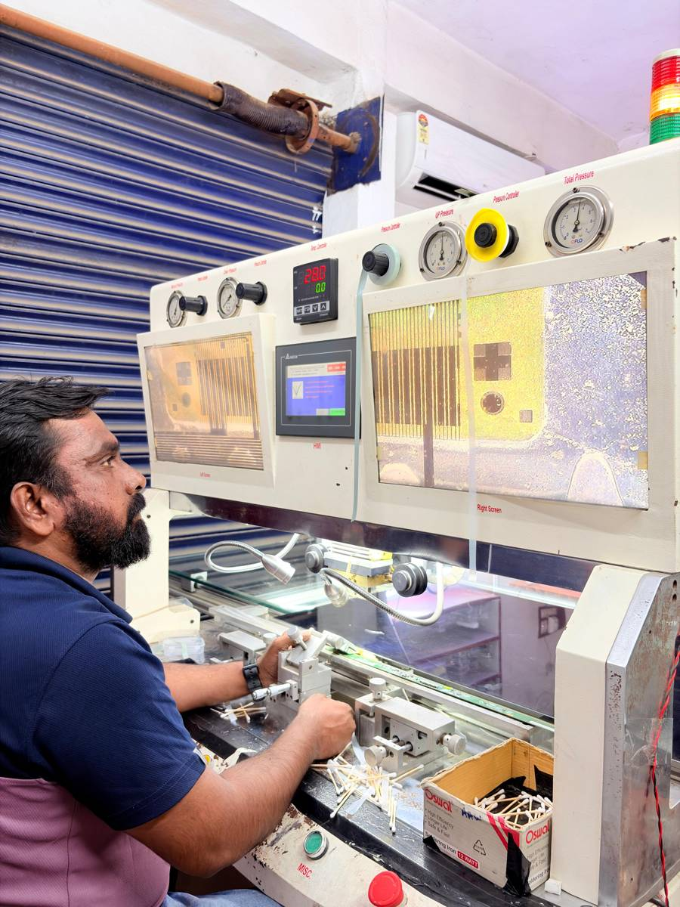
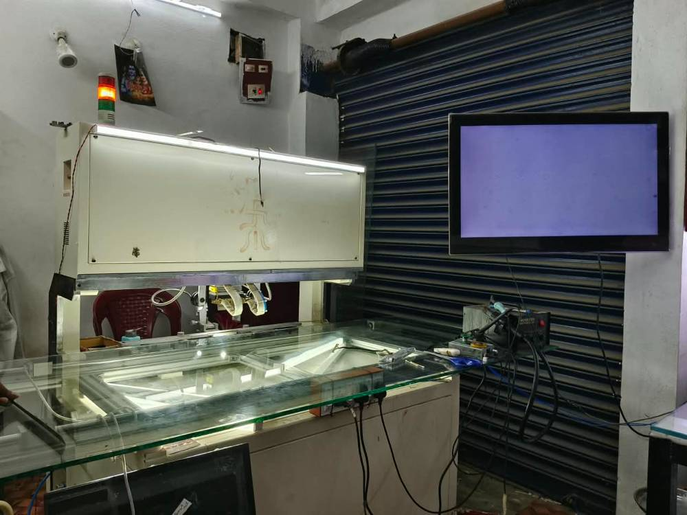
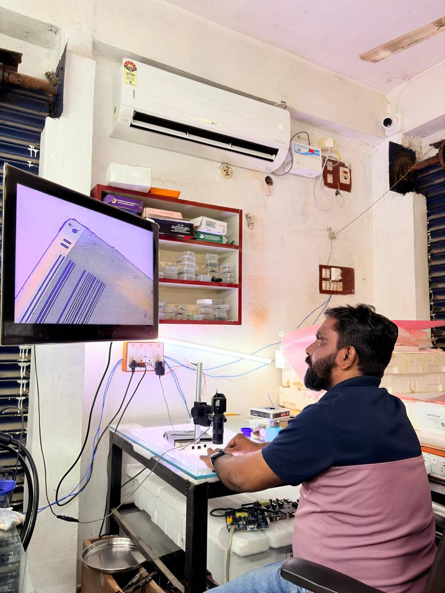

Broken or blank TV screen? We fix it.
Multi-brand TV service centre with COF bonding. We repair and replace screens on LCD, LED, 4K, 8K, OLED and QLED TVs, and we have new panels and displays in stock. Budget-friendly prices, because repairing a screen costs far less than buying a new TV. We also offer home pick-up and delivery.
అన్ని కంపెనీల టీవీలు సర్వీస్ చేయబడును
Does your TV look like this?
These are the faults we see most. Sound still works and the TV switches on, but the picture is wrong.
Every TV is different. We always inspect first and tell you if it can be repaired or if the screen needs replacing.
Screen repair and replacement for every TV
Lines, patches, black screen or a cracked panel? Bring your TV in or call us. We keep repairs budget friendly, and we tell you the cost before we start.
COF bonding
Lines, dead patches and half-working displays repaired with COF bonding, often without changing the whole panel.
All size screen replacement
Cracked or damaged screen? We replace it on TVs of every size.
LCD, LED, 2K, 4K, 8K, OLED, QLED
Screen service for every type of TV, from old LCD to the latest OLED and QLED.
Home pick-up and delivery
We collect your TV from home and bring it back after service or repair.
Budget-friendly prices
Fair rates on repair, replacement and new panels. Multi-brand service under one roof.
Our equipment: the COF bonding machine
This is the machine that lets us repair a TV screen instead of throwing the TV away.

What is COF, and why does it matter?
Inside every LCD, LED, OLED and QLED TV, thin flexible strips called COF (chip on film) carry the picture signal from the control board to the glass screen. Each strip has a small chip on it. If a strip loosens or fails, you see lines or dead patches, even though the rest of the TV is fine.
A COF bonding machine joins a new strip to the edge of the glass with great precision. Changing the strip is often much cheaper than buying a new screen.
- Remove the faulty stripThe damaged strip and old glue are carefully cleaned from the glass edge.
- Align under magnificationThe new strip is lined up with the tiny contacts on the glass.
- Press with controlled heatA special conductive film and exact heat and pressure bond the strip to the glass.
- Test the pictureWe switch the TV on and check that the lines or patches are gone.
What each part of the machine does


New TVs, new panels, honest advice
Sales and service in one place. Tell us your room size and budget, and see the picture in the shop before you decide.
New TVs for sale
LED and Smart TVs to suit your room and budget.
New panels and displays
Replacement panels available for your TV.
See before you buy
Check sound and picture quality in the shop.
Simple repair, no surprises
Four steps from your call to a working TV.
Call or message
Tell us the brand and fault. We pick up your TV from home, or you can bring it to the shop.
We inspect
Our technician finds the fault.
You approve the price
We explain the cost. No work starts without your yes.
Fixed, tested, delivered
We repair or replace the screen, test it, and deliver it back to you.
Book a visit
Fill this in and add photos of your TV if you can. It opens WhatsApp with your message ready to send.
Talk to us
Prefer to speak? Call either number.
91776 3833799639 09181Proprietor: M. Srikanth
Home pick-up and delivery available for TV service and repair.
Shop No. 3, Kondurivari Street, Jayaprakash Narayan Road, Girmajipet, Warangal, Telangana 506002
Landmark: beside Vaibhava Lakshmi Shopping Mall
Call to confirm shop timings.
Chat on WhatsApp